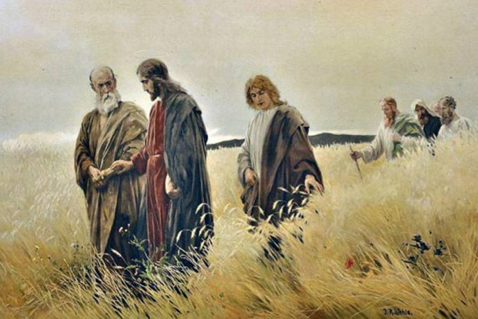

Leitura Orante do Evangelho
Sábado
Santa Teresa de Calcutá
(22ª Semana do Tempo Comum)
5 de setembro de 2020


Oração do dia
Deus do universo, fonte de todo bem, derramai em nossos corações o vosso amor e estrei tai os laços que nos unem convosco para alimentar em nós o que é bom e guardar com sol icitude o que nos destes. Por Nosso Senhor Jesus Cristo, Vosso Filho, na unidade do Espírito Santo.
Leitura: 1 Coríntios 4,6-15
6Irmãos, apliquei essa doutrina a mim e a Apolo por causa de vós, pa ra que o nosso exemplo vos ensine a não vos inchar de orgulho, tomando o partido de um contra outro, e a “não ir além daquilo que está escrito”. 7Com efeito, qu em é que te faz melhor que os outros? O que tens que não tenhas recebido? Mas, se recebeste tudo que tens, por que, então, te glorias, como se não o tivesses recebido? 8Vós já estais saciados! Já vos enriquecestes! Sem nós, já começastes a reinar! Oxalá estivésseis mesmo reinando, para nós também reinarmos convosc o! 9Na verdade, parece-me que Deus nos apresentou, a nós, apóstolos, em últim o lugar, como pessoas condenadas à morte. Tornamo-nos um espetáculo para o mund o, para os anjos e os homens. Nós somos os tolos por causa de Cristo; vós, po rém, os sábios nas coisas de Cristo. Nós somos os fracos; vós, os fortes. Vós s ois tratados com toda a estima e atenção, e nós, com todo o desprezo. 11Até a presente hora, padecemos fome, sede e nudez; somos esbofeteados e vivemos erra ntes; 12fadigamo-nos, trabalhando com as nossas mãos; somos injuriados, e abenç oamos; somos perseguidos, e suportamos; 13somos caluniados, e exortamos. Tornam o-nos como que o lixo do mundo, a escória do universo, até o presente. 14Escrevo- vos tudo isso não com a intenção de vos envergonhar, mas para vos admoestar como meus filhos queridos. 15De fato, mesmo que tivésseis dez mil educadores na vida e m Cristo, não tendes muitos pais. Pois fui eu que, pelo anúncio do Evangelho, vos gerei em Jesus Cristo. – Palavra do Senhor..
Salmo Responsorial: 144(145)
O Senhor está perto de quem o invoca!
MÉ justo o Senhor em seus caminhos, é santo em toda obra que ele faz. Ele está perto da pessoa que o invoca, de todo aquele que o invoca lealmente.
O Senhor está perto de quem o invoca!
O Senhor cumpre os desejos dos que o temem, ele escuta os seus clamores e os salva. O Senhor guarda todo aquele que o ama, mas dispersa e extermina os que são ímpios.
O Senhor está perto de quem o invoca!
Que a minha boca cante a glória do Senhor e que bendiga todo ser seu nome santo desde agora, para sempre e pelos séculos.
O Senhor está perto de quem o invoca!Evangelho: Lucas 6,1-5
1Num sábado, Jesus estava passando através de plantações de trigo. Seus discípulos ar rancavam e comiam as espigas, debulhando-as com as mãos. 2Então alguns fariseus disser am: “Por que fazeis o que não é permitido em dia de sábado?” 3Jesus respondeu-lhes: “A caso vós não lestes o que Davi e seus companheiros fizeram quando estavam sentindo fome ? 4Davi entrou na casa de Deus, pegou dos pães oferecidos a Deus e os comeu, e ainda po r cima os deu a seus companheiros. No entanto, só os sacerdotes podem comer desses pães”. 5E Jesus acrescentou: “O Filho do Homem é senhor também do sábado”. – Palavra da Salvação.
Leituras do mês
TAGS
missao Amazonia evengel covid-19 indigenas novica papa francisco
Destaques
Província Stella Matutina
Rua São Benedito, 2146 - Santo Amaro - São Paulo - SP |
Tel. (11) 5547-7222


Província Spiritus Divinae Sapientiae
Rua Arnaldo Janssen, 320 - Cara-Cara - Ponta Grossa - PR |
Tel. (42) 3326 4091